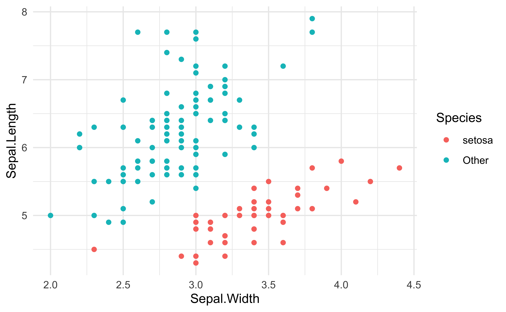
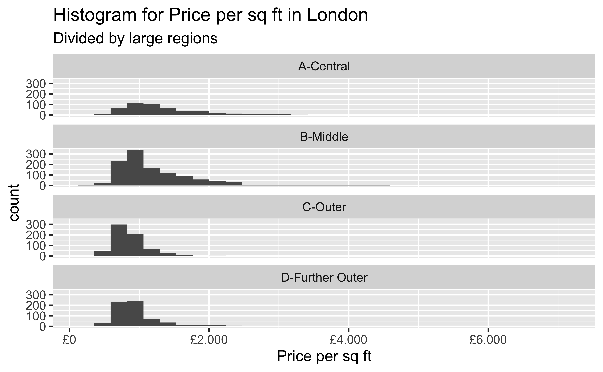
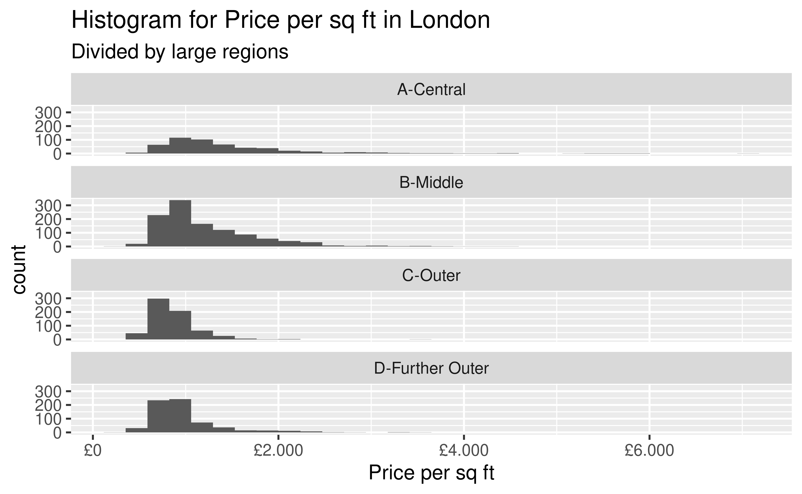

How Various Factors Affect Housing Prices in London
TROUT1
Zhixin & Sam & Josh
2021-12-02
Project Goal
In this project we will explore how factors such as: Location, House type, Area and Number of Bedrooms influence the price of property in London. The goal of this project is to use this information to identify which factors have the greatest influence on the price of housing.
About the Data
The dataset we used was obtained from Kaggle. According to the uploader the information was obtained via web scraping. Below is what the original data looks like.
## Rows: 3,480
## Columns: 11
## $ X <int> 0, 1, 2, 3, 4, 5, 6, 7, 8, 9, 10, 11, 12, 13, 14, 15…
## $ Property.Name <chr> "Queens Road", "Seward Street", "Hotham Road", "Fest…
## $ Price <int> 1675000, 650000, 735000, 1765000, 675000, 420000, 14…
## $ House.Type <chr> "House", "Flat / Apartment", "Flat / Apartment", "Ho…
## $ Area.in.sq.ft <int> 2716, 814, 761, 1986, 700, 403, 1548, 560, 1308, 646…
## $ No..of.Bedrooms <int> 5, 2, 2, 4, 2, 1, 4, 1, 3, 2, 6, 6, 5, 2, 2, 6, 3, 6…
## $ No..of.Bathrooms <int> 5, 2, 2, 4, 2, 1, 4, 1, 3, 2, 6, 6, 5, 2, 2, 6, 3, 6…
## $ No..of.Receptions <int> 5, 2, 2, 4, 2, 1, 4, 1, 3, 2, 6, 6, 5, 2, 2, 6, 3, 6…
## $ Location <chr> "Wimbledon", "Clerkenwell", "Putney", "Putney", "Put…
## $ City.County <chr> "London", "London", "London", "London", "London", "L…
## $ Postal.Code <chr> "SW19 8NY", "EC1V 3PA", "SW15 1QL", "SW15 1LP", "SW1…Problems
There are some large problems with the dataset we need to fix before we begin our analysis.
## Rows: 3,480
## Columns: 3
## $ No..of.Bedrooms <int> 5, 2, 2, 4, 2, 1, 4, 1, 3, 2, 6, 6, 5, 2, 2, 6, 3, 6…
## $ No..of.Bathrooms <int> 5, 2, 2, 4, 2, 1, 4, 1, 3, 2, 6, 6, 5, 2, 2, 6, 3, 6…
## $ No..of.Receptions <int> 5, 2, 2, 4, 2, 1, 4, 1, 3, 2, 6, 6, 5, 2, 2, 6, 3, 6…As you can see, ‘No. of Bedrooms’, ‘No. of Bathrooms’ and ‘No. of Receptions’ are the same as each other in each record. By looking up some of the listings we determined that this number represents the ‘No. of Bedrooms’
Problems
## Rows: 3,480
## Columns: 1
## $ City.County <chr> "London", "London", "London", "London", "London", "London"…## [1] 962We can also see that this dataset contains houses from outside the City of London and that the Location variable does not have entries for 962 of the 3480 listings.
Cleaning
- So we cleaned the dataset by: 1. Filtering out all houses that are not in London. 2. Removing the variables “No. of bathrooms” and “No. of receptions.”2 3. Creating variable: “price_per_sq_ft” = “Price”/“Area in sq ft” 4. Extracting the District Code from the “Postal Code” variable.3 5. Assigning each District code to one of the 4 large regions.4
Next we will expand on how we assigned each property to one of 4 large regions
Discription & Citation
- All code for tidying the data can be found in r script “presentation/presentation_files/Support-files/Tidy Up Data.R”
- Kulkarni, A., 2021. Housing Prices in London. [online] Kaggle.com. https://www.kaggle.com/arnavkulkarni/housing-prices-in-london [Accessed 19 November 2021].
- Because of the flaw of the original data, the variable “No. of bedrooms”, “No. of bathrooms”, and "No. of receptions are all the same for each observation. We checked some famous houses and figured out that this number represents the number of bedrooms.
- District Code is always the first two to four characters in postal code. i.e: SW9X 9BT has District Code of SW9. This code indicates which region does the house locate.
- The standard of dividing regions are shown at next page.
The Closer, the Better?
We have chosen to divide the District codes into 4 regions shown on the map below
- Different marked colour represents different regions:
- Red represents group “A-Central”
- Blue represents group “B-Middle”
- Red represents group “C-Outer”
- Unmarked region represents group “D-Further outer”
Deviding Rule Image

- What we expected is that: The closer to the city center, the more expensive the house is. That is, higher price per sq ft.
General Glimpse

Data&Interpretation
## # A tibble: 4 × 5
## large_region `Mean Price` `1/4 Quantile` `Median Price` `3/4 Quantile`
## <chr> <dbl> <dbl> <dbl> <dbl>
## 1 A-Central 1487. 942. 1223. 1735.
## 2 B-Middle 1212. 841. 1029. 1453.
## 3 C-Outer 868. 703. 809. 977.
## 4 D-Further Outer 980. 744. 882. 1050.Surprisingly, we found that the housing price per sq ft is not always decreasing when the region we are looking at is further and further from the city center. When we encounter “D-Further Outer” region, the price increase a little. This happens to mean, median, and quarter quantiles, which means the housing price per sq ft in “Further Outer” region is generally higher than the “Outer” region.
Map&Interpretation
- We are curious if there is a region in “Further Outer” that has a very high housing price per sq ft which is affecting our result. So we made a map to see the distribution of housing price.

Map&Interpretation
- It seems that no such region exists. The housing price per sq ft in “Further outer” is higher than “Outer” region in general.
Prices grouped by region and type of housing
(to look at if the difference in mean price between the outer and further outer regions are concentrated into one type of housing, its not)
## # A tibble: 6 × 4
## # Groups: House Type [3]
## `House Type` large_region `Area in sq ft` Price
## <chr> <chr> <dbl> <dbl>
## 1 Flat / Apartment D-Further Outer 992. 1064751.
## 2 House D-Further Outer 2316. 2048030.
## 3 New development D-Further Outer 1369. 1535955.
## 4 Flat / Apartment C-Outer 888. 767305.
## 5 House C-Outer 2236. 1826378.
## 6 New development C-Outer 1325. 1608774.Model showing correlation between price and area over all large regions

Table showing correlation between Area and Price over all large regions
## # A tibble: 1 × 12
## r.squared adj.r.squared sigma statistic p.value df logLik AIC BIC
## <dbl> <dbl> <dbl> <dbl> <dbl> <dbl> <dbl> <dbl> <dbl>
## 1 0.575 0.575 1564528. 4020. 0 1 -46606. 93218. 93236.
## # … with 3 more variables: deviance <dbl>, df.residual <int>, nobs <int>Due to the Graph being cluttered due to over plotting i instead used glance to create a table to show there is a strong correlation between area and price of housing. We can tell this this from the high adjusted r squared value of 0.575(to 3dp).
Correlation between Area and Price over the Middle region

Table showing correlation between Area and Price over the Middle region
## # A tibble: 1 × 12
## r.squared adj.r.squared sigma statistic p.value df logLik AIC BIC
## <dbl> <dbl> <dbl> <dbl> <dbl> <dbl> <dbl> <dbl> <dbl>
## 1 0.730 0.730 1.23e6 3024. 2.99e-320 1 -17290. 34585. 34600.
## # … with 3 more variables: deviance <dbl>, df.residual <int>, nobs <int>The increase in adjusted r squared from 0.575 to 0.730 shows that limiting the data to 1 large region makes the strength of the correlation between area and price much higher.
Conclusion
Generally as you move further from the center of london house prices decrease
However our data tells us that on average homes in the further outer sector are more expensive then houses in the outer sector , this did not fit with the trend or our hypothesis.
There is a fairly simplistic linear relationship between area of a home and the price of a home .
Limitations with our data
The data set was poorly webscraped.
The data set only contained observations from certain regions of London.
The data set gave limited information on specifics of the properties for example if the houses were terrace, detached or semidetached. As well as if the homes came with any land or any amenities.
Hello World
Click the
Knitbutton to compile your presentationMake sure to commit and push all resulting files to your GitHub repo
Using reveal.js
It’s possible to have a horizontal sliding transition as well as nest multiple slides to create a vertical stack.
When presenting, you use the left/right arrows to step through the top-level (horizontal) slides. When you arrive at a vertical stack you can optionally press the up/down arrows to view the vertical slides or skip past them by pressing the right arrow.
(click the down key now)
reveal.js
The presentation is created using the
reveal.jspackageYou can create a slide show broken up into sections by using the # and ## heading tags
You can also create a new slide without a header using a horizontal rule (—-)
- You can also add pauses between content on a slide using (“. . .”)
Like this.
…or using “::: fragment”
Like this.
Layouts
You can use plain text
- or bullet points
because you can combine HTML and Markdown syntax.
*You can also add footnotes
Code
## # A tibble: 2 × 5
## term estimate std.error statistic p.value
## <chr> <dbl> <dbl> <dbl> <dbl>
## 1 (Intercept) -17.6 6.76 -2.60 1.23e- 2
## 2 speed 3.93 0.416 9.46 1.49e-12## # A tibble: 1 × 12
## r.squared adj.r.squared sigma statistic p.value df logLik AIC BIC
## <dbl> <dbl> <dbl> <dbl> <dbl> <dbl> <dbl> <dbl> <dbl>
## 1 0.651 0.644 15.4 89.6 1.49e-12 1 -207. 419. 425.
## # … with 3 more variables: deviance <dbl>, df.residual <int>, nobs <int>Plots

Plot and text
- Some text
- goes here

Different widths
- Some text
- goes here

Tables
If you want to generate a table, make sure it is in the HTML format (instead of Markdown or other formats), e.g.,
| Sepal.Length | Sepal.Width | Petal.Length | Petal.Width | Species |
|---|---|---|---|---|
| 5.1 | 3.5 | 1.4 | 0.2 | setosa |
| 4.9 | 3.0 | 1.4 | 0.2 | setosa |
| 4.7 | 3.2 | 1.3 | 0.2 | setosa |
| 4.6 | 3.1 | 1.5 | 0.2 | setosa |
| 5.0 | 3.6 | 1.4 | 0.2 | setosa |
| 5.4 | 3.9 | 1.7 | 0.4 | setosa |
Images

Or you can also include a full page image. See next slide.
Math Expressions
You can write LaTeX math expressions inside a pair of dollar signs ($…$), e.g. \(\alpha+\beta\). You can use the display style with double dollar signs:
\[\bar{X}=\frac{1}{n}\sum_{i=1}^nX_i\]
Feeling adventurous?
You can learn more about the options available at the following pages: